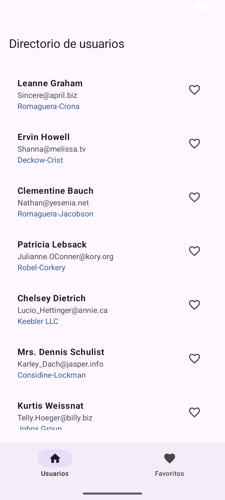
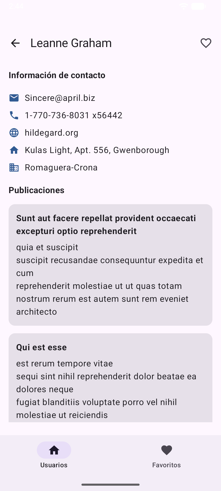

Informe técnico y validación de la aplicación Android
26 de octubre de 2026
Aplicación Android nativa en Kotlin con Jetpack Compose, Retrofit, Room y arquitectura MVVM. Consulta usuarios y publicaciones desde JSONPlaceholder, muestra el detalle y persiste favoritos localmente.
La interfaz observa el estado del ViewModel. El repositorio coordina Retrofit y Room. Las respuestas HTTP no exitosas y excepciones de red se transforman en estados mostrables.
interface UsersApi { @GET("users") suspend fun getUsers(): Response<List<User>> @GET("posts") suspend fun getPosts(@Query("userId") userId: Int): Response<List<Post>> } Base URL: https://jsonplaceholder.typicode.com/@Entity(tableName = "favorites") data class FavoriteEntity(@PrimaryKey val id: Int, val name: String, val email: String, val company: String, ...) @Dao interface FavoriteDao { @Query("SELECT * FROM favorites ORDER BY name") fun observeAll(): Flow<List<FavoriteEntity>> @Upsert suspend fun upsert(favorite: FavoriteEntity) @Query("DELETE FROM favorites WHERE id = :id") suspend fun delete(id: Int) }El ViewModel inicia observación de favoritos y carga de usuarios dentro de viewModelScope. Compose recoge el StateFlow mediante collectAsStateWithLifecycle. La pantalla de detalle carga publicaciones al cambiar el usuario. Se implementan Loading, Success y Error; IOException muestra ausencia de conexión y permite reintentar.

Usuarios reales con nombre, correo y empresa.

Datos de contacto, empresa y publicaciones del usuario seleccionado.
No certificadas: carga, error/sin conexión y favoritos offline. El AVD presentó Application Not Responding: com.android.systemui durante la automatización; esa pantalla del sistema no se usa como evidencia.
| Prueba | Resultado |
|---|---|
| Gradle assembleDebug | APROBADA |
| Instalación y apertura | APROBADA tras corregir namespace |
| Usuarios, detalle y publicaciones | APROBADA |
| Favoritos persistentes/offline | NO CERTIFICADA por inestabilidad del AVD |
| GitHub público | PENDIENTE de autorización/publicación |
La solución separa UI, ViewModel, repositorio, API y persistencia. Retrofit convierte JSON a modelos Kotlin y Room conserva favoritos localmente. Compilación, instalación, consulta remota, navegación y publicaciones fueron verificadas. La validación offline requiere un AVD estable o dispositivo físico.
No se incluye URL GitHub: el proyecto no ha sido publicado.